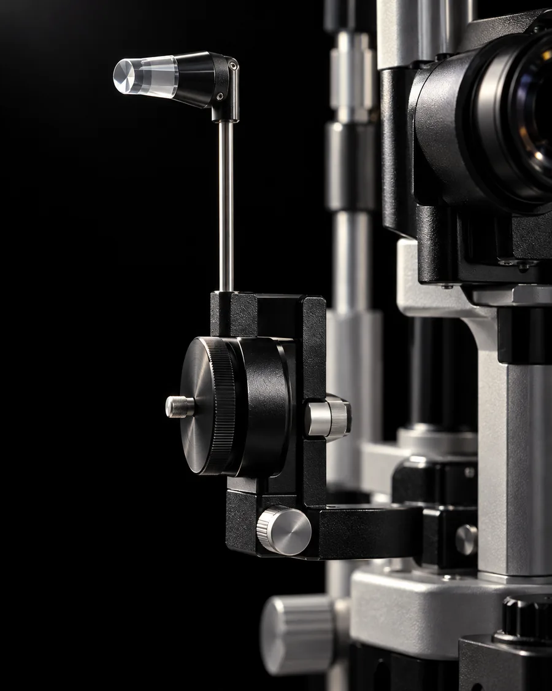

Diagnostyka jaskry: badanie GDx PRO
Laserowe, bezdotykowe badanie włókien nerwowych siatkówki. Pomaga okulistce ocenić ryzyko jaskry i zdecydować, czy wystarczy obserwacja, czy potrzebne jest leczenie.
- Bada
- okulistka dr Monika Szczygłowska-Uramowska
- Czas
- około 10 minut
- Krople
- do samego badania GDx PRO niepotrzebne [do potwierdzenia przez okulistkę]
- Cena
- [do uzupełnienia]
 zdjęcie poglądowe
zdjęcie poglądowe
Co pokazuje badanie
W jaskrze zanikają włókna nerwowe siatkówki, a z czasem uszkodzeniu ulega nerw wzrokowy. GDx PRO mierzy grubość warstwy tych włókien, a analiza statystyczna wyniku pokazuje, czy coś odbiega od normy.
- grubość warstwy włókien nerwowych siatkówki
- pierwsze oznaki jaskry, na poziomie komórek zwojowych siatkówki
- ryzyko zmian jaskrowych i stopień ich zaawansowania
- zmiany przy neuropatii niedokrwiennej nerwu wzrokowego (AION)
- druzy tarczy nerwu wzrokowego
Jak wygląda badanie
Bezdotykowe i bezbolesne. [przebieg do zatwierdzenia przez okulistkę]
Rozmowa
Okulistka pyta o jaskrę w rodzinie, wcześniejsze wyniki ciśnienia w oku i leki.
Pomiar
Siadasz przy aparacie i patrzysz na punkt. Laser skanuje dno oka, niczego nie dotykając.
Opis wyniku
Okulistka opisuje badanie i omawia wynik dla każdego oka.
Dalsze kroki
Obserwacja i kontrola za jakiś czas, dalsza diagnostyka albo leczenie.
Inne badania przy podejrzeniu jaskry
-

Badanie dna oka
Ocena nerwu wzrokowego i siatkówki przy lampie szczelinowej. Jeśli okulistka poda krople rozszerzające źrenice, nie prowadź, dopóki widzenie nie wróci do normy. [zalecenie do zatwierdzenia przez okulistkę]
-

Tonometria
Pomiar ciśnienia w oku, w znieczuleniu miejscowym. Oba badania wykonuje okulistka w ramach wizyty, 200 zł.
Zdjęcia poglądowe, wygenerowane. Docelowo sesja sprzętu w gabinecie.
Pytania pacjentów
Czy badanie boli?
Nie. Badanie GDx PRO jest bezdotykowe i bezbolesne. Trwa około 10 minut.
Czy po badaniu mogę prowadzić samochód?
Po samym badaniu GDx PRO tak, bo nie podajemy do niego kropli. Jeśli w czasie wizyty okulistka poda krople rozszerzające źrenice, nie prowadź, dopóki widzenie nie wróci do normy, i zapytaj ją o zalecenia. [do zatwierdzenia przez okulistkę]
Kto powinien zrobić badanie?
O potrzebie badania decyduje okulistka. [wskazania do zatwierdzenia przez okulistkę]
Ile kosztuje badanie?
[cena do uzupełnienia] Wizyta okulistyczna kosztuje 200 zł, w sobotę 250 zł.